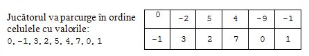

Your browser doesn't support the features required by impress.js, so you are presented with a simplified version of this presentation.
For the best experience please use the latest Chrome, Safari or Firefox browser.
Joc
Enunţ
Jocul nostru presupune parcurgerea unui tablou bidimensional cu 2 linii şi N coloane, format din 2 x N celule pătratice. Fiecare celulă are asociată câte o valoare întreagă v care nu se modifică pe durata desfăşurării jocului. Jucătorii trebuie să găsească un drum de la celula de plecare la celula de sosire care respectă următoarele condiţii:
- celula de plecare este cea din linia 1 şi coloana 1, iar celula de sosire este cea din linia 2 şi coloana N.
- nu trece decât cel mult o dată prin oricare celulă.
- deplasarea se poate face din celula curentă spre oricare altă celulă învecinată cu ea pe orizontală sau verticală.
- conţine cel mult KMAX celule consecutive aflate pe aceeaşi linie.
Pentru un astfel de drum se calculează punctajul acestuia ca fiind egal cu suma valorilor asociate celulelor prin care trece drumul.
Cerinţă
Cunoscând valorile asociate celulelor tabloului, scrieţi un program care determină punctajul maxim care poate fi obţinut în acest joc.
Date de intrare
Fişierul de intrare joc13.in va conţine pe prima linie două numere naturale N şi KMAX separate printr-un spaţiu cu semnificaţiile din enunţ. Pe fiecare dintre următoarele două linii se găsesc câte N numere întregi, reprezentând valorile asociate celor 2 x N celule ale tabloului.
Date de ieşire
Fişierul de ieşire joc13.out va conţine pe prima linie numărul întreg P, reprezentând punctajul maxim care se poate obţine.
Exemplu
| joc.in |
joc.out |
Explicatie |
6 3
0 -2 5 4 -9 -1
-1 3 2 7 0 1
|
21 |
 |
5 5
0 0 4 2 10
2 -3 -8 6 -2
|
14 |
|
5 4
-3 0 5 4 10
-2 3 -2 7 0
|
22 |
|
Pentru rezolvarea problemei enunţate anterior (ţinând cont de KMAX) se pot folosi următoarele structuri de date
- un tablou bidimensional v care să reţină valorile asociate jocului;
- un tablou tridimensional d pe care să se aplice principiul programării dinamice (este necesar un tablou tridimensional întrucât fiecare element este caracterizat de indicele de linie, indicele de coloană şi k; tabloul tridimensional ne permite să reţinem pentru un element punctajele maxime care se pot obţine până la acesta, punctaje care diferă în funcţie de k); d[i][j][k] reprezinta punctajul maxim care se obtine pe un drum care se termina pe linia i si coloana j si contine k celule consecutive pe aceeasi linie.
Se încearcă aplicarea principiului programării dinamice astfel
- se iniţializează d[0][1][1] cu valoarea v[0][1] întrucât aceasta reprezintă poziţia iniţială a jocului;
- se iniţializează d[1][1][1] cu valoarea d[0][1][1] + v[1][1] intrucât există un singur mod de a accesa elementul v[1][1];
- în continuare se parcurg celelalte elemente în ordinea depărtării faţa de punctul de plecare aplicându-se următoarea recurenţă:
- d[i][j][k] = max(d[i][j][k], d[1-i][j-1][h] + v[1-i][j] + v[i][j]) când k = 1 pentru orice h de la 1 la min(j-1, KMAX-1), unde j este indicele curent de coloană;
- d[i][j][k] = d[i][j-1][k-1] + v[i][j] pentru orice k de la 2 la min(j, KMAX);
Rezultatul final se va obţine calculând maximul dintre elementele a[1][n][k], k = 1, KMAX.
Complexitatea algoritmului
Din punct de vedere al timpului de executie ordinul de complexitate este O(n*KMAX), iar ordinul de complexitate al memoriei este O(n*KMAX).